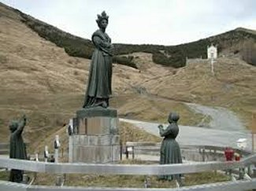
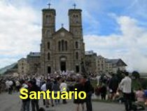
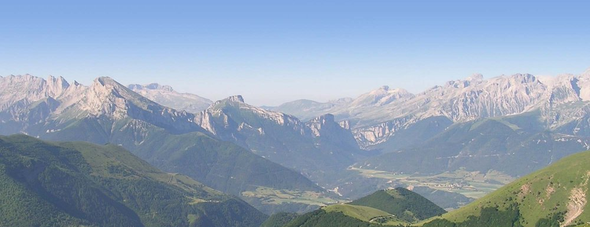

PRELÚDIO
A APARIÇÃO DE NOSSA SENHORA
EM LA SALETTE, foi um acontecimento admirável e muito importante. DEUS NOSSO
SENHOR através da Sua MÃE 
A Manifestação Sobrenatural na época causou intensa alegria, surpresa e muita expectativa na região francesa onde ocorreu, e da mesma forma que também propiciou o desenvolvimento de grande descrença em muitas pessoas. Por incrível que possa parecer além dos anticatólico, uma quantidade apreciável de pessoas que não acreditavam na Aparição, eram autoridades religiosas, sacerdotes e até bispos. E eles não acreditando, passaram a criticar ferozmente, e agir com violência e impetuosidade, causando um desagradável desconforto aos cristãos ao colocar a dúvida no coração de muita gente. E como se isto não fosse suficiente, investiram contra os videntes, fazendo exigências absurdas a aquelas humildes e pobres crianças, tornando o viver delas amargo e cruel, embora na realidade, os videntes eram os autênticos portadores da Vontade de Divina.
NOSSA SENHORA quando transmitiu Sua MENSAGEM em 1846, separou o conteúdo da realidade ATUAL, que podia e devia ser divulgado naquela época, do conteúdo principal que se tratava de uma grande revelação, a qual foi denominada SEGREDO, que ELA pediu, fosse somente divulgado em 1858, ou seja, doze anos após aquela data da Aparição, vindo a coincidir com a época em que ocorreram as notáveis Aparições de NOSSA SENHORA em Lourdes, na França, à vidente Bernadette Soubirous, na Gruta de Massabieille.
E como sempre acontece em todas as Aparições, nossa MÃE SANTÍSSIMA mostrou-se carinhosa e muito preocupada com todos os seus filhos, observando que a indiferença e o desamor existiam em grau bem elevado em muitos corações, que os afastavam cada vez mais de DEUS. Por isso mesmo, maternalmente e com uma voz suplicante e amorosa, mais uma vez convidou todos os seus filhos ao cultivo do amor, da amizade, do respeito, e, sobretudo, que buscassem a conversão do coração. A VIRGEM MÃE chorando com bastante tristeza lançou veementes apelos e gritos lamentosos aos ouvidos de todos os corações, evidenciando a realidade dos alertas e avisos Divinos, pedindo que fizessem penitencia e que rezassem com fé e dedicação.
Para reforçar as suas palavras, à medida que aconselhava a humanidade através dos videntes, ELA mostrava os fatos que relatava como num grande telão, e assim, as crianças ouviam o que NOSSA SENHORA dizia e viam a apresentação dos mesmos. Desse modo, a MÃE DE DEUS autenticava as suas palavras, mostrando todos os acontecimentos da MENSAGEM ATUAL, onde relata os fatos que iam ocorrer naquela época e em tempos próximos, e o SEGREDO, uma volumosa série de acontecimentos gravíssimos praticados pela humanidade, e que se realizarão ao longo dos séculos, descrevendo a verdadeira história humana até o FINAL DOS TEMPOS. São fatos impressionantes, testemunhos eloquentes da crueldade, da total ausência de amor e do retrato cruel da maldade humana. E que, por isso mesmo, a tristeza Divina é tão grande e profunda que exige reparação. ELA, nossa MÃE SANTÍSSIMA, repleta de dor e magoada por tanta incompreensão, pronunciou um sério alarme, dizendo: “Que já estava sendo muito difícil para ELA conseguir segurar o braço da Justiça de DEUS que quer agir com pesada e gigantesca punição, para castigar a humanidade, por tantos crimes e abusos praticados com tanta frieza e desamor”.

Então, NOSSA SENHORA voltou até nós, numa outra Manifestação admirável e importante em Fátima, Portugal, fazendo revelações a três pequenos pastores, para que insistissem na divulgação da grandeza do Seu Amor por toda humanidade, e mais uma vez, com os olhos cobertos de lágrimas, suplicou veementemente, "implorando que a humanidade se convertesse por que a vida não podia continuar daquele jeito", DEUS já estava muito ofendido, e que não é justo e nem concebível, que as pessoas, os filhos inventados pelo o infinito Amor do próprio DEUS, continuassem ofendendo ao SENHOR, cometendo absurdas e tantas incríveis transgressões. E completando as suas palavras com a grandeza de um maternal e amoroso apelo, ELA disse:
- “Não façam isto, meus filhos, por que DEUS já está muito triste e ofendido com todos vocês”.
Considerando todos estes fatos, a Aparição da VIRGEM MARIA em La Salette, ocupa uma dimensão de grande realce, por que nela, a Mensagem de NOSSA SENHORA além de abordar acontecimentos em diversas épocas, trata dos possíveis castigos vindouros, assim como o perdão Divino, para aqueles que fizerem penitência. Desse modo, a VIRGEM não se limitou ao tempo da Aparição em 1848, ou melhor, somente evidenciando ocorrências da época em que aconteceu a Manifestação Sobrenatural, mas descreve primordialmente um panorama histórico do que acontecerá, desde aquela época até hoje, destacando fatos e ocorrências da nossa atualidade e seguindo com a descrição impressionante dos fatos na direção do Final dos Tempos, que se não acontecer uma evidente conversão, uma acentuada melhora nas intenções humanas, todos aqueles fatos se concretizarão irremediavelmente.
E então, em face daquelas Mensagens de tanto valor, o demônio e seus asseclas se apavoraram, vendo a realidade em tudo aquilo quiseram ocultar a verdade a todo custo, conseguindo instigar algumas autoridades religiosas que já não acreditavam na Aparição por razões pessoais, e que por isso mesmo, passaram a atuar como secretários de satanás, conseguindo ocultar, fazendo desaparecer dentro do próprio Vaticano, aquelas preciosas MENSAGENS DA VIRGEM escritas pelos videntes Mélanie e Maximin.
Todavia, no início de nosso século XXI, a VIRGEM SANTÍSSIMA removeu todos os obstáculos que impediam a divulgação da Mensagem Divina, propiciando a um sacerdote bem intencionado, misteriosamente encontrar em perfeito estado, os originais escritos pelos videntes, e assim, La Salette pode reaparecer em plenitude com toda a sua autenticidade, para alegria de todos nós e primordialmente, para o bem da humanidade.
Nós do APOSTOLADO, com muita honra e alegria, temos a satisfação de reproduzir integralmente as MENSAGENS neste Site.
APOSTOLADO DOS SAGRADOS CORAÇÕES
http://www.apostoladosagradoscoracoes.com/
ALPES FRANCESES, REGIÃO DA APARIÇÃO
